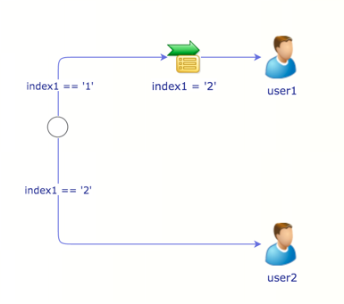
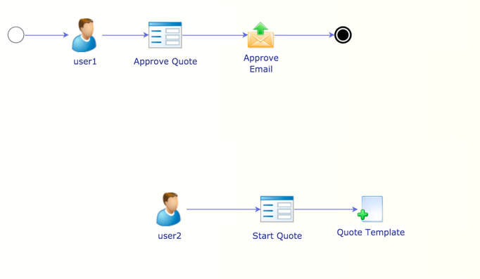

Workflow Timers do not Fire
A Timer only fires once on a document, consider adding a script to avoid adding multiple Timers.
Timers do not fire immediately, they are indexing dependant.
Multiple Branches are firing within a Workflow:
Check that filters are in place, filters should oppose one another.
Check that Once Only Conditional Rules are used when only one branch should run.
Check that a filter is not changed down the one branch, and then becoming true for the other.
See the following example:

The document gets filed when moved to an Unassigned Task
Uncheck the File option in the Rule Options
Workflow Forms added do not show in the menu
In the Audit section of the Form:
Check the Current Users Only checkbox and the Document Based Checkbox.
The Current Users only should be checked when only the current users should have access to the form
Document Based should be checked if a Workflow is to be initiated on a document using a Workflow Form. (This should be the starting point)
If Document Based is not checked on a Form Initiated Workflow, a No Item file will be created in a Workflow/{WorkflowName} folder, to change this folder, add a Node in the Node field under the Audit section.
A document within a Workflow is unexpectedly filed/removed from the workflow OR a Workflow is starting over again
Check that there are no Node Rules clashing with the Workflow.
Node rules should, if possible, be moved to the Workflow.
The Rule allocating to the Workflow should fire once, a filter may be used for this: workflow_id == ''
The workflow does not stop when allocated to a user
Check that Human Tasks are used, Allocate Rules do not stop at that point in the workflow.
The Workflow starts and/or follows a strange path
Check that the is one, and only one Start point, multiple End points may be used.
Check that there are no lone workflow sections, or sections that are not joined to the main body.
An example of a lone workflow section that causes this:
